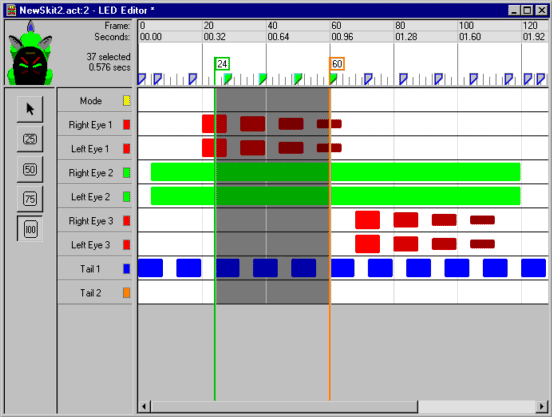
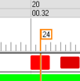
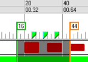
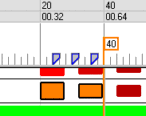
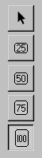
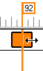
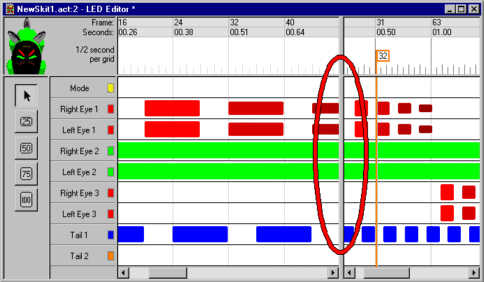

5.0 LED Editing
LED files control all the lights on
AIBO. You can specify when each LED turns on, its duration
and brightness. Any lights with
multiple LED's (such as the 210 tail, or 310 horn) can have mixed
colors. LED's can be turned on/off about 8 times per
second. The 220 headlight however, shouldn't be
turned on/off faster than twice per second (since it physically moves).
Different thickness
and color LED bars (notes) indicate brightness. The
ruler/timeline bar along the top shows keyframes tabs from the motion
editor, to make aligning LED events to motions easier.
The motion tabs are for reference only & cannot be changed from the
LED editor.

5.1 Navigating LED Files
An orange marker bar shows the current time position.
Left-clicking
in the ruler or data pane, moves the marker. |

|
|
|
Click-n-drag
in the ruler bar (above the data pane), and a green selection marker
appears at the starting point. Skitter highlights between the
markers & changes any included keyframe tabs green. All
LED's are selected.
|
 |
|
|
Click-n-drag
in the data pane
(below the ruler bar), to select one or more LED "notes" between the
two
markers. Once you unclick, the green marker disappears and
selected LED "notes" are drawn orange. You can extend a
selection by pressing SHIFT, while selecting additional notes.
|

|
|
|
In the upper-left corner of
motion editor, is the LED preview
of AIBO. It represents AIBO LED settings at the current time
position (the orange marker).
|
|
5.2 Edit LED Notes
|
5.2.1 Set LED Brightness
You select LED brightness with the left-most
toolbar. Choose a value from 25% to100%. While
one of the brightness buttons are selected, clicking in the data window
adds LED notes.
5.2.2 Adding LED notes
Adding notes is easy. First select an LED
brightness level, then click in the data window where you want the note.
5.2.3 Changing LED Notes Length
Click on an LED note to highlight it. The
note turns orange
with a black border. You can move the highlighted note using
keyboard,
or click-n-drag the orange highlighted note with the mouse.
To stretch the note, position mouse on its
right-most edge. A resizing cursor appears.
Click-n-drag to stretch or shrink the note. Note: If you
select multiple notes, the resize cursor won't appear -- only one note
can be resized at a time.
5.2.4 Changing LED Note Brightness
Select one or more LED notes, or a time
range. Next, click on the brightness toolbar (25% to
100%). All
highlighted notes are changed to the new brightness level.
|


|
5.3 LED Special Effects
- Insert Blank Time. Convenient for
shift LED's an exact number of seconds or frames.
- Mirroring Left/Right. For 210, 220
& 7. An easy way
to increase variety in your AIBO personalities
- Scaling LED Lengths. Stretch/shrink LED
durations to exactly match motion or sound.
5.4 Undo/Redo Changes to LED File
If you make a change that doesn't work out, simply undo
it
(Edit Menu->Undo). Skitter supports unlimited undo (ie:
all edits since the LED file was loaded, or last platform
conversion). If you undo too
much, you can reapply changes (Edit Menu->Redo).
Keyboard shortcuts of Ctrl+Z (Undo) and Ctrl+Y (Redo)
are available.
5.5 The Splitter Bar
The vertical splitter bar allows two views of the LED
file
at once. To adjust the position of the splitter bar, select:
"Window Menu -> Split Window".
You can
move the splitter at any time. To dock the splitter bar
(hide it), simply drag the
splitter to its left-most position.

|